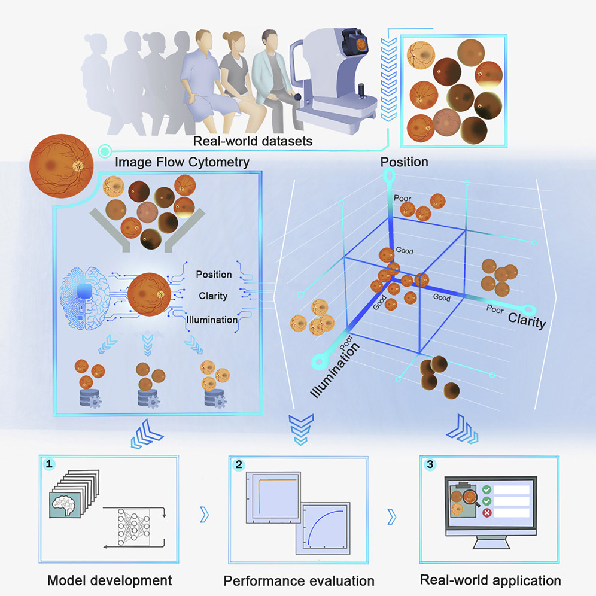

About me

Innovation & regulation in Surg/Med/AI Tech

üè• Challenges in the AI clinical translation

Figure 1: Medical AI translational challenges between system development and routine clinical application
Li, Zhongwen, Lei Wang, Xuefang Wu, Jiewei Jiang, Wei Qiang, He Xie, Hongjian Zhou, Shanjun Wu, Yi Shao, and Wei Chen. “Artificial intelligence in ophthalmology: The path to the real-world clinic.” Cell Reports Medicine 4, no. 7 (2023).
IEC 62304 standard for software

https://www.iso.org/standard/38421.html
Good ML practices by FDA

US-FDA-Artificial-Intelligence-and-Machine-Learning-Discussion-Paper: https://www.fda.gov/files/medical%20devices/published/US-FDA-Artificial-Intelligence-and-Machine-Learning-Discussion-Paper.pdf
Dating Ultrasound Scan (12 week scan)

Wright-Gilbertson M. 2014 in PhD thesis; https://en.wikipedia.org/wiki/Gestational_age; National-Health-Service 2021. Screening for down’s syndrome, edwards’ syndrome and patau’s syndrome. https://www.nhs.uk/pregnancy/your- pregnancy- care
TransThalamic
Fetal Brain Ultrasound Image Dataset

Burgos-Artizzu, X et al. (2020). FETAL PLANES DB: Common maternal-fetal ultrasound images [Data set]. In Nature Scientific Reports (1.0, Vol. 10, p. 10200). Zenodo. https://doi.org/10.5281/zenodo.3904280
TransCerebellum Plain
Fetal Brain Ultrasound Image Dataset

Burgos-Artizzu, X et al. (2020). FETAL PLANES DB: Common maternal-fetal ultrasound images [Data set]. In Nature Scientific Reports (1.0, Vol. 10, p. 10200). Zenodo. https://doi.org/10.5281/zenodo.3904280
TransVentricular Plane
Fetal Brain Ultrasound Image Dataset

Burgos-Artizzu, X et al. (2020). FETAL PLANES DB: Common maternal-fetal ultrasound images [Data set]. In Nature Scientific Reports (1.0, Vol. 10, p. 10200). Zenodo. https://doi.org/10.5281/zenodo.3904280
AI/ML pipeline

Methods
GAN-based fetal imaging

- Bautista et al. 2022, ”Empirical Study of Quality Image Assessment for Synthesis of Fetal Head Ultrasound Imaging with DCGANs” MIUA https://github.com/xfetus/miua2022 (b) Liu et al. 2021 ”Towards Faster and Stabilized GAN Training for High-fidelity Few-shot Image Synthesis” https://arxiv.org/abs/2101.04775
Methods
Diffusion-Super-Resolution-GAN (DSR-GAN) Transformer-based-GAN

M. Iskandar et al. “Towards Realistic Ultrasound Fetal Brain Imaging Synthesis” in MIDL2023. https://github.com/xfetus/midl2023
Experiments: Design and results

M. Iskandar et al. “Towards Realistic Ultrasound Fetal Brain Imaging Synthesis” in MIDL2023. https://github.com/xfetus/midl2023
Fetal US imaging with Diffusion models

- Ho et al. 2020 ”Denoising Diffusion Probabilistic Models” https://arxiv.org/abs/2006.11239
- Fiorentino et al. 2022 ”A Review on Deep Learning Algorithms for Fetal Ultrasound-Image Analysis” https://arxiv.org/abs/2201.12260
github.com/xfetus/midl2023

M. Iskandar et al. “Towards Realistic Ultrasound Fetal Brain Imaging Synthesis” in MIDL2023. https://github.com/xfetus/midl2023
xfetus üë∂ ü߆ ü§ñ
A Python-based library for synthesising ultrasound images of fetal development

Holoscan Core Concepts

Figure 4: Operator: An operator is the most basic unit of work in this framework.
Bring Your Own Model (BYOM)

import os
from argparse import ArgumentParser
from holoscan.core import Application
from holoscan.operators import (
FormatConverterOp,
HolovizOp,
InferenceOp,
SegmentationPostprocessorOp,
VideoStreamReplayerOp,
)
from holoscan.resources import UnboundedAllocator
class BYOMApp(Application):
def __init__(self, data):
"""Initialize the application
Parameters
----------
data : Location to the data
"""
super().__init__()
# set name
self.name = "BYOM App"
if data == "none":
data = os.environ.get("HOLOSCAN_INPUT_PATH", "../data")
self.sample_data_path = data
self.model_path = os.path.join(os.path.dirname(__file__), "../model")
self.model_path_map = {
"byom_model": os.path.join(self.model_path, "identity_model.onnx"),
}
self.video_dir = os.path.join(self.sample_data_path, "racerx")
if not os.path.exists(self.video_dir):
raise ValueError(f"Could not find video data:{self.video_dir=}")
# Define the workflow
self.add_flow(source, viz, {("output", "receivers")})
self.add_flow(source, preprocessor, {("output", "source_video")})
self.add_flow(preprocessor, inference, {("tensor", "receivers")})
self.add_flow(inference, postprocessor, {("transmitter", "in_tensor")})
self.add_flow(postprocessor, viz, {("out_tensor", "receivers")})
def main(config_file, data):
app = BYOMApp(data=data)
# if the --config command line argument was provided, it will override this config_file
app.config(config_file)
app.run()
if __name__ == "__main__":
# Parse args
parser = ArgumentParser(description="BYOM demo application.")
parser.add_argument(
"-d",
"--data",
default="none",
help=("Set the data path"),
)
args = parser.parse_args()
config_file = os.path.join(os.path.dirname(__file__), "byom.yaml")
main(config_file=config_file, data=args.data)%YAML 1.2
replayer: # VideoStreamReplayer
basename: "racerx"
frame_rate: 0 # as specified in timestamps
repeat: true # default: false
realtime: true # default: true
count: 0 # default: 0 (no frame count restriction)
preprocessor: # FormatConverter
out_tensor_name: source_video
out_dtype: "float32"
resize_width: 512
resize_height: 512
inference: # Inference
backend: "trt"
pre_processor_map:
"byom_model": ["source_video"]
inference_map:
"byom_model": ["output"]
postprocessor: # SegmentationPostprocessor
in_tensor_name: output
# network_output_type: None
data_format: nchw
viz: # Holoviz
width: 854
height: 480
color_lut: [
[0.65, 0.81, 0.89, 0.1],
] real-time-ai-for-surgery
Getting started docs

Figure 6: Getting started documentation provide with a range of links to setup, use, run and debug application including github workflow.
real-time-ai-for-surgery
üè• Endoscopic pituitary surgery


real-time-ai-for-surgery
ü§ù Contributing

Figure 7: real-time-ai-for-surgery follows the Contributor Covenant Code of Conduct. Contributions, issues and feature requests are welcome.
real-time-ai-for-surgery
GitHub templates


real-time-ai-for-surgery
Release version summaries


ü§ñ üëÄ AI in ophthalmic imaging modalities

Figure 8: Practical application of AI in all common ophthalmic imaging modalities
Li, Zhongwen, Lei Wang, Xuefang Wu, Jiewei Jiang, Wei Qiang, He Xie, Hongjian Zhou, Shanjun Wu, Yi Shao, and Wei Chen. “Artificial intelligence in ophthalmology: The path to the real-world clinic.” Cell Reports Medicine 4, no. 7 (2023).
ü§ñ üëÅÔ∏è READY
A Python-based library for REal-time Ai Diagnosis for nYstagmus

ü§ñ üëÄ Real-time AI Diagnosis for Nystagmus

ü§ñ üëÄ Real-time AI Diagnosis for Nystagmus
Future work
Real-time AI guidance for high-quality images (Liu et al. 2023) 
Implement UNET-Visual Transformer models (Yao et al. 2022)

Liu, L., Wu, X., Lin, D., Zhao, L., Li, M., Yun, D., Lin, Z., Pang, J., Li, L., Wu, Y. and Lai, W., 2023. DeepFundus: a flow-cytometry-like image quality classifier for boosting the whole life cycle of medical artificial intelligence. Cell Reports Medicine, 4(2).
Yao, Chang, Menghan Hu, Qingli Li, Guangtao Zhai, and Xiao-Ping Zhang. “Transclaw u-net: claw u-net with transformers for medical image segmentation.” In 2022 5th International Conference on Information Communication and Signal Processing (ICICSP), pp. 280-284. IEEE, 2022.
Healing Through Collaboration

FDA-approved AI-based Medical Devices

Benjamens, S., Dhunnoo, P. and Meskó, B. The state of artificial intelligence-based FDA-approved medical devices and algorithms: an online database. npj Digit. Med. 3, 118 (2020).